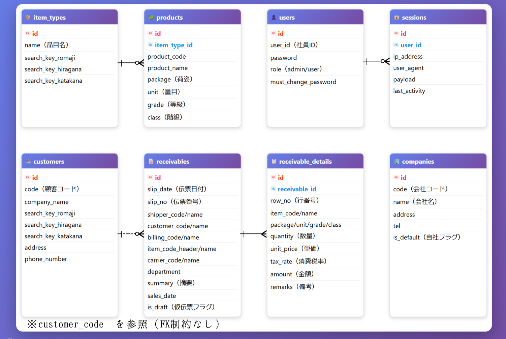

小規模事業者向けの販売管理を想定したWebアプリ
Laravel × MySQLで構築した業務効率化システム

ログイン画面：初回パスワード変更機能付き

管理者画面：売上・在庫・ユーザー管理などを統合予定。現在設計中です。

業務選択画面：付箋機能やショートカットキーなど操作性にこだわりました
リンク
概要
前職で感じた業務上の課題をもとに、効率化と使いやすさを重視して開発した販売管理システムです。
ログイン機能や初回パスワード変更、管理者画面など、実際の業務運用を想定した設計を取り入れています。
伝票入力画面では、ファンクションキーによるショートカット操作を実装し、Windowsアプリケーションに近い操作感をWebアプリ上で実現することを意識しました。
主な機能
- ログイン認証（社員ID＋初期パスワード）
- パスワード変更・初回変更フラグ
- ユーザー管理（管理者のみアクセス可能）
- 操作ログ・レポート管理（現在設計中）
- 売掛伝票入力（行番号・スクロール・集計欄付き）
技術構成
| フレームワーク | Laravel 10 |
|---|---|
| データベース | MySQL（Railway連携） |
| デプロイ | Render |
| 開発環境 | VS Code / GitHub / Windows |
システム設計（データベース設計）
- 業務で使用される伝票構造を意識し、伝票ヘッダと明細を分離した設計としています
- 商品・顧客・品目などはマスタとして管理し、変更に強い構成を意識しました
- 検索性向上のため、ローマ字・ひらがな・カタカナの検索キーを保持しています

ER図：伝票構造とマスタの関係を示しています
テスト
実施期間：2025年12月10日〜12月15日
対象機能
ログイン認証、パスワード変更、伝票入力、バリデーション、Ajax検索、UI操作など
確認内容
正常系：ログイン成功、パスワード変更、伝票登録、検索補完など
異常系：未入力・誤入力時のエラーメッセージ表示、認証失敗時の挙動
結果概要
主要機能は正常に動作
一部UI表示・認証処理に改善点あり